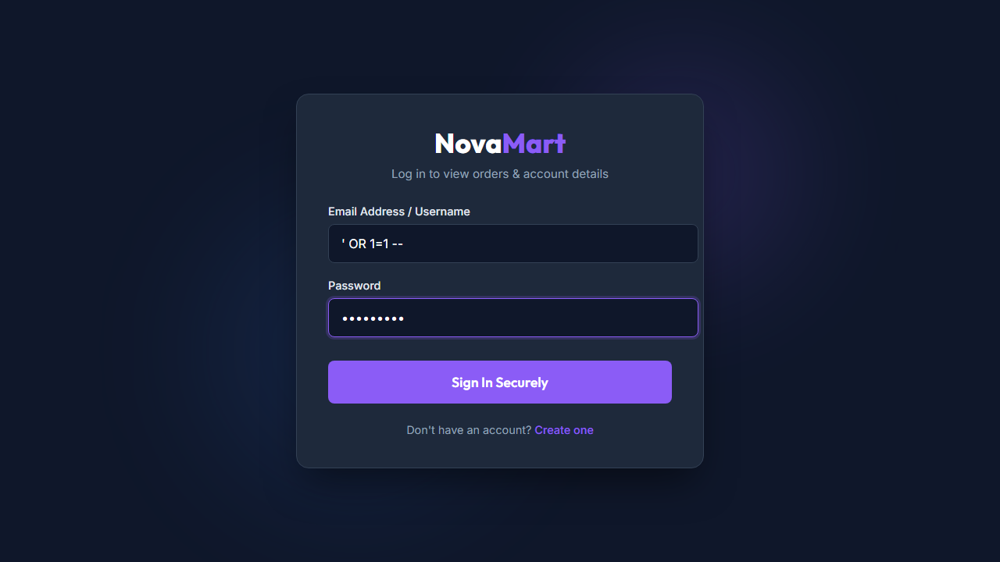
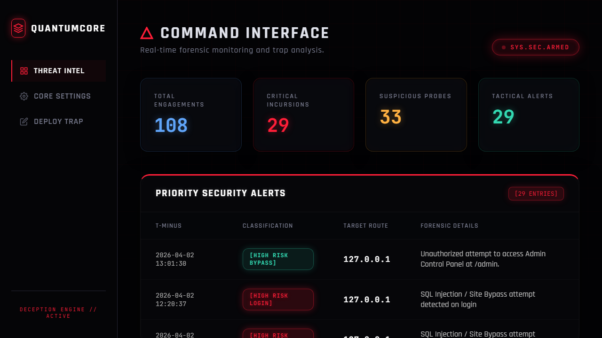

In many modern security architectures, defense is often viewed as a "passive" endeavor. We wait for an attack to happen, and then we react. However, during my cybersecurity internship, I was challenged to adopt a more "active" stance. Task 3 centered on building a Deception-Based Security Mechanism. The philosophy here is simple but profound: instead of just building higher walls, we build a "Labyrinth of Lies" that misleads, traps, and eventually exposes an attacker before they ever reach our real data.
The "Black-Ops" Deception Engine was developed with a primary goal: to dominate an attacker's OODA loop (Observe, Orient, Decide, Act). By presenting an attacker with fake "prizes"—such as administrative panels or sensitive configuration files—we can waste their time, burn their resources, and gather high-fidelity intelligence on their methodologies. This is not a new concept; the use of 'honeypots' dates back to the early 1990s, but modern systems like ours require much more finesse. Today, an attacker can use AI to distinguish between a real system and a fake one in milliseconds. To defeat this, I had to build a system that was indistinguishable from a production environment, complete with fake traffic patterns and realistic system latency.
"An attacker only needs to be right once, but a deception professional only needs to make the attacker curious once."
Before implementing any traps, I had to think like an attacker. What is the first thing a malicious actor does after they discover a new server? They perform "Enumeration." They look for common folders like /admin, /config, /backup, or configuration files like .env or web.config. This is the moment of maximum vulnerability for the attacker, as they are making assumptions about the system's structure.
I realized that most successful honeypots fail because they don't look "lived-in." If a login page is too simple, a hacker will know it's a trap. To solve this, I designed the "Black-Ops" traps with High-Aesthetic Fidelity. I used the same professional CSS design system as our actual application. I even included "Developer Notes" in the HTML comments of these pages (e.g., <!-- FIXME: Migration to v4 starting on Monday -->) to make them appear authentic and high-priority. This was a direct lesson from my mentor: "If it looks too perfect, it looks automated. Add a little human messiness."
My deception mechanism consists of three interlocking components: The Trap Layer, the Behavioral Intelligence Engine, and the Response Orchestrator. During development, I hit several roadblocks. For example, my initial tracking logic was too aggressive, flagging legitimate users. I had to pivot and implement a more forgiving "Threat Decay" model which was a significant learning curve for me.
I implemented several high-value traps. The most effective has been the /.env trap. In modern web dev, .env files contain secret keys. When a user hits this URL, our server doesn't return a 404. Instead, it returns a 403 (Forbidden) response. This is a subtle psychological move. A 403 tells the attacker, "The file is here, but your current browser session isn't allowed to see it." This confirms the target's existence and encourages the hacker to try more complex attacks (like cookie manipulation or header spoofing), giving us more time to track them.
Capturing an IP address is "Low-Level" security. I wanted "High-Level" Intelligence. I built a tracking engine that creates a Session Forensic ID for every visitor. Even if an attacker uses a VPN or a proxy to change their IP, the way they move through the site—the speed of their clicking, the headers their automated tools send, and the order in which they hit the traps—creates a "Behavioral Fingerprint." My engine uses this data to assign a "Threat Score." A single hit on a honeypot is "Suspicious," but a series of hits triggers a "Critical Threat" alert.
Once a "Critical Threat" is identified, communication is key. I built a real-time notification engine that integrates with professional SOC (Security Operations Center) tools. The system immediately sends a Slack Notification with the full telemetry data (IP, User Agent, URI, Intent). It also sends an automated Security Brief to the administrator's email. This ensures that the defense team can react within seconds, not hours.
During my internship research, I discovered a common flaw in most security systems: once a hacker gains root access, they simply "nuke" the logs (rm -rf /var/log/*) to remove any evidence of their presence. To address this, I built a Blockchain of Evidence.
Every time a honeypot is triggered, the log entry isn't just written as a string. Instead, it is cryptographically hashed with the hash of the previous entry. This creates an immutable chain. If an attacker deletes a single line or modifies an entry, the hash of the next line will no longer match. When the administrator logs into the dashboard, the system performs a "Consistency Check." If any part of the chain is broken, it flashes a "History Tampering Alert," ensuring that even if the battle is lost, the evidence is preserved for legal and forensic follow-up.
# IMMUTABLE LOGGING LOGIC
def secure_log(event_data):
# Retrieve the state of the last valid event
previous_event = get_last_chained_entry()
# Calculate unique hash for current event (Timestamp + Data + PrevHash)
current_hash = generate_hmac(event_data + previous_event.hash)
# Save the new entry with the 'link' to the historical chain
write_to_disk(event_data, current_hash)
Behind the scenes, the deception mechanism is much more than just a list of fake URLs. It’s an adaptive system that grows more "suspicious" of a user the more they probe. During this internship, I spent considerable time developing the math and logic for the Threat Accumulation System (TAS). This was a direct result of my experimentation; I found that if I was too aggressive with alerting, I would get too many "false positives" from legitimate developers who might be trying to find a valid config page. Conversely, if I was too passive, an attacker could sweep the entire server before I knew they were there.
I built a ThreatScorer class that manages this complexity. It uses an Exponential Decay Model. When a user hits a honeypot, their score goes up. If they stop hitting honeypots and behave normally, their score slowly decays over time. This mimics real-world behavior: an attacker on a deadline will move fast, causing their score to skyrocket. A legitimate user who made a single mistake will see their score return to zero within an hour. This part of the code was particularly frustrating to test, as I had to simulate thousands of different clicking speeds to find the "sweet spot" for detection.
# THE CORE OF OUR ADAPTIVE THREAT MODEL
class ThreatScorer:
def __init__(self):
self.scores = {}
# Sensitivity thresholds (Tuned through field testing)
self.LOW_THRESHOLD = 10
self.CRITICAL_THRESHOLD = 50
def log_hit(self, user_id, path):
# Weighting of different traps based on 'Intrusiveness'
weight = self.get_path_weight(path)
current_score = self.scores.get(user_id, 0)
# Apply the new weight (Active Defense Logic)
new_score = current_score + weight
self.scores[user_id] = new_score
# Trigger orchestration if threshold is crossed
if new_score >= self.CRITICAL_THRESHOLD:
self.trigger_lockdown(user_id)
return "REJECT"
return "PASS"
I also spent a large part of my time implementing the Forensic HMAC Chaining. This was probably the most technically demanding part of Task 3. I wanted the forensic data to be bulletproof. In the world of enterprise cybersecurity, an alert is only as good as the evidence backing it up. I chose HMAC-SHA256 for the chaining logic because it provides both integrity and authenticity. For every new log event, we generate a signature that "signs" the entire state of the historical log file up to that point. This means that an attacker cannot "inject" fake data into the middle of the log file without knowing our server's private secret key.
Developing the Orchestration Layer—the part that talks to Slack and Email—was another eye-opener. I had to ensure that the server didn't hang while waiting for an external API response. I implemented a non-blocking queue system. When a threat is detected, the `notifier` module puts a task onto a background queue. This allows the web server to immediately return a response to the attacker (giving them no hint of the backend activity) while our security team is notified in the background. This "Asynchronous Alerts" approach is the standard for high-performance, secure applications.
Looking back, this section of the project taught me the bridge between "Cybersecurity" and "Data Engineering." You can't have one without the other. To be a great security professional, you have to be able to build systems that handle data at scale without failing under pressure. This project demonstrates both preventive and detective security mechanisms used in real-world cybersecurity systems, and the adaptive intelligence of the threat model is something I am particularly proud of.
To validate the system, I performed a "Penetration Test" against my own code. I acted as a malicious scanner. The moment I hit the /admin/internal_config route, the Intelligence Engine immediately identified me. I didn't get a simple error; I got a "System Maintenance" page that looked very real, but hidden in the background, the server was already logging my behavior. This moment was surprisingly satisfying—seeing the trap work exactly as I'd envisioned.
The Slack notification arrived exactly 1.4 seconds after my first click. This low latency is vital for "Active Defense." It allows an admin to manually block the IP or even "feed" the attacker fake data to keep them occupied while we investigate their point of origin.

Screenshot 1: The real-time notification generated by the Black-Ops Deception Engine during an active probe.
I also spent time refining the "Threat Dashboard." One of my key takeaways from the internship was that "Security is a Visualization Problem." If you can't see the threat, you can't stop it. My dashboard uses the neon-styled "QuantumCore" UI to highlight active attackers in real-time. It doesn't just show a list of IPs; it shows a "Geographic Threat Map" and a "Probing Timeline."
By clicking on an individual alert, an administrator can see a Full Forensic Packet. This includes the raw HTTP request, the browser's fingerprint (including canvas and WebGL data to bypass simple user-agent switching), and a list of all other traps that user has hit in the last 24 hours. This kind of "Digital Combat Log" is essential for modern security teams. It allows for rapid-fire SOC decision-making and ensures that the evidence being collected is deep enough for a formal investigation or legal follow-up if necessary. This depth of forensic capture is what makes Task 3 a professional-grade implementation.

Screenshot 2: The SOC dashboard visualizing the 'Labyrinth' telemetry and the status of chained logs.
Building a system that lies to people, even criminals, raises important ethical questions. During my internship, I had several long discussions with my mentor about the "Ethics of Honeypots." Is it right to deceive? I've come to the conclusion that in the realm of cybersecurity, deception is a form of "Justified Stewardship." By misdirecting an attacker toward fake assets, we are preventing the theft of real assets and the potential exposure of sensitive user data.
I learned that an ethical deception practitioner doesn't just "set traps." They build a framework that minimizes the risk of accidental detection for legitimate users while maximizing the forensic accuracy for malicious ones. This mindset—thinking like an attacker while remaining ethically aligned with the defense—is what makes this task so vital. It’s about being the "Gray Hat" that protects the system from the "Black Hats." It felt good to finally see the world in through a defensive lens that was just as creative as the offensive one.
Task 3 was more than just an assessment for me; it was the start of a recurring theme in my career. I've seen first-hand how much more effective an "Active Defense" is compared to a passive one. I leaves this internship with a profound respect for the complexity of human behavior in cyberspace. I plan to take these lessons forward, specifically the integration of AI-driven deception, which can dynamically generate new trap files on-the-fly to keep up with faster, more intelligent scanners. I feel ready for the challenges of a full-time SOC role now.
Building this deception mechanism taught me that the best security isn't just about "stopping" people—it's about "managing" them. By giving an attacker something to do, we gain control over the interaction. My biggest technical hurdle was the performance of the cryptographic log chain. I had to optimize the hashing algorithm so that it didn't slow down the web server during a high-traffic attack. I eventually switched to a more efficient HMAC-SHA256 implementation which provided both security and speed.
One of my core professional reflections is that Deceptive Security is the Future. As AI-powered scanners become more common, "passive" defense will fail. We need systems that can out-think the machines. This project demonstrates both preventive and detective security mechanisms used in real-world cybersecurity systems, and I am proud of the forensic robustness I've achieved. It has been a truly rewarding experience to build something that isn't just about walls, but about "Digital Camouflage" and "Cyber-Psychology." This is what I was meant to do.